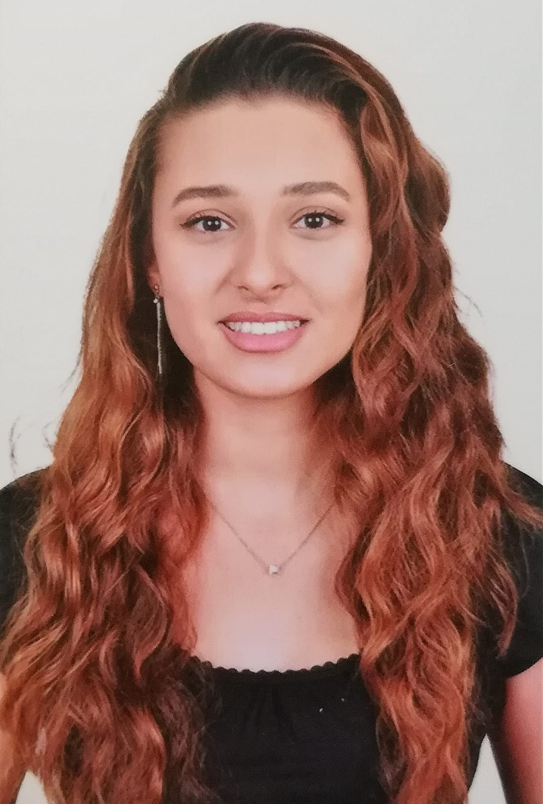

Hakkımda
Ben Kimim?
Merhabalar ben Beyzanur,Kısaca kendimden bahsedecek olursam eğer ben İstanbul bakırköy doğumlu, Sakaryalı , henüz 20 sine yeni basmış genç bir bireyim. Şuan Bandırma Onyedi Eylül Üniversitesinde Yazılım Mühendisliği bölümünde 1. sınıf öğrencisiyim. Önceliklerim Ailem , Doğa ve Hayvanlar, Değerlerim, Arkadaşlıklarım, İlgi alanlarım, Zevklerim ...Meraklı ve araştırmacı biri olduğum için ilgimi çeken şeyler; teknoloji, bilim tarzında oluyor, bu içerikleri takip etmek ve bunların derinlerinde kaybolmak hoşuma gidiyor. Ayrıca ilgi alanlarıma resim yapmak , fiziksel aktivitelerde bulunmak, hayvanlarla sürekli iç çe olmak , ritimlere kendimi bırakıp dans etmek ve tasarım giriyor. Tabii bu ilgi alanlarımı ayrı ayrı yazabilir ve diğerlerinden de bahsedebilirim fakat çok uzun bir yazı olsun istemiyorum . Becerilerimin dışarıdan bir gözün gözlemlemesiyle bulunmasını tercih ederdim ama kendimi yeni yeni tanıyan biri olarak el işlerinde oldukça iyi olduğumu düşünüyorum. Analitik düşünce gücüne sahip olduğumu keşfettim . Dışa dönük biri olduğumu çevremden sürekli duruyorum. Eskiden takım sporlarında severek oynardım reflekslerim iyidir. Bazı şeyleri harmanlamaya bayılırım bunu okuduğum bölüme de yansıtmayı düşünüyorum. Yazılım+ Tasarım sonucu ortaya çıkan şeylerden mutlu olacağımı düşünüyorum. Yeniliklere her daim açığımdır insanları dinlemeyi ve onlarla bir sorunu çözmeyi bir beceri haline getirebilirim. .
Eğitim
Bandırma Onyedi Eylül Üniversitesi | 2020-2025